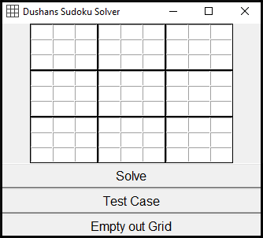

Судоку решавач

Што е
Карактеристики
Судоку решавач направен во python, работи со алгоритам базиран на рекурзија и Tkinter библиотека за неговото GUI.
Со pyinstaller е доведено до .exe формат. Погледнете го кодот на gitHub овде.
Solve ке ја реши задачата доколку има повеке од 16 валидни бројки.
Test Case ке ви даде задача со само едно решение.
Empty out grid ке го избрише внесеното.